Long, hard days
A study of street vendors across seven Indian cities found most work 10 hours or more a day, and in several cities over half travel 10 km or more to reach where they sell.1 The vendors we met pushed 5–10 km and worked 10–12 hours.
A frugal design case study, Pune 2026
India’s everyday fruit and vegetable cart, redesigned around the person who pushes it: easier to steer, safer to stop, and still cheap to build and repair.
Who did what: Nadiya and I planned and ran all six interviews together, and did the affinity mapping, fishbone and design objectives as a pair. Then we split the making: Nadiya drew the sketches, and I built the 3D model in SketchUp, rendered it in D5 Render and priced the parts.
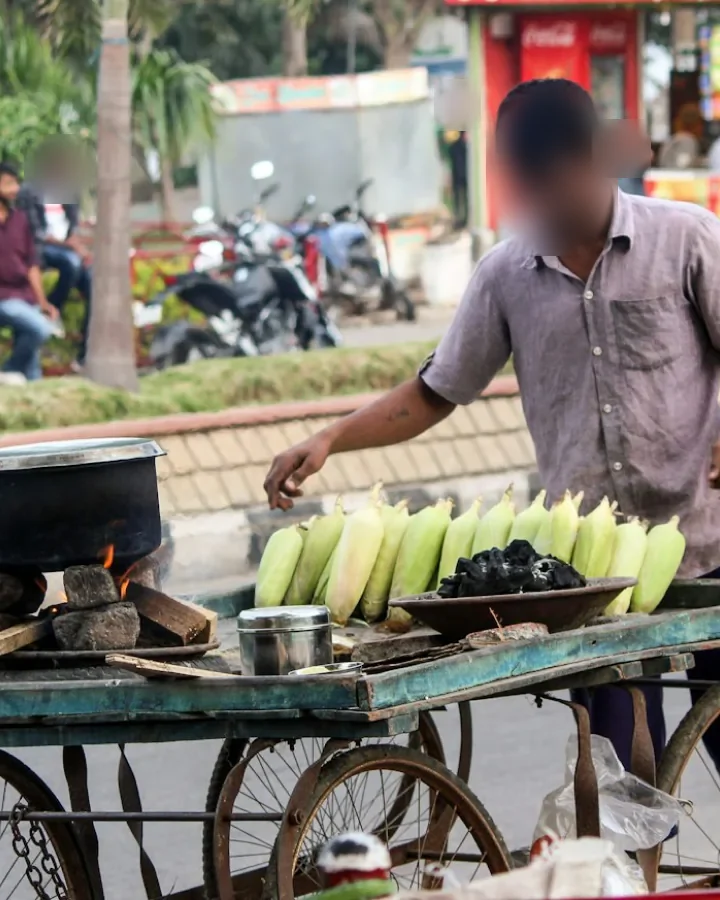
100–300 kga loaded cart, from our desk research
5–10 kmpushed every day, vendors told us
10–12 hrsa day on their feet
49%of Delhi vendors surveyed lost income in heatwaves4
Vendors push 100–300 kg carts for 5–10 km a day over uneven roads, with no real steering, brakes or weather cover.
Interviewed 6 vendors on-site, used affinity mapping and a fishbone diagram to find the biggest problem, then sketched, modelled and priced a low-cost upgrade.
A locally repairable upgrade with swivel caster wheels, a cycle handle with a brake, a canopy and organised crates, for an estimated ₹5,000–6,000.

Where we ended up
About ₹5,000–6,000 in parts, all sold locally.
See the 3D conceptHeavy to push, hard to steer, no brakes, no weather cover. Our frugal-design question: what if the cart were redesigned around the person who pushes it, without pricing them out?
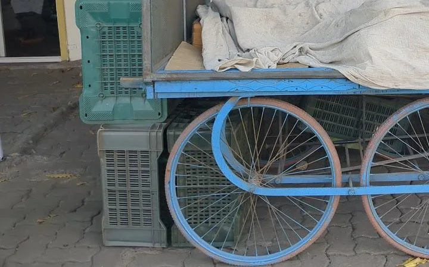
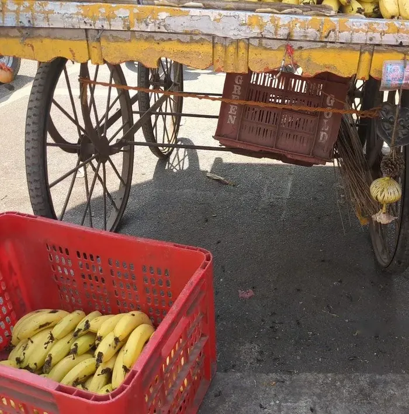
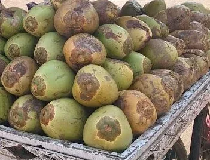
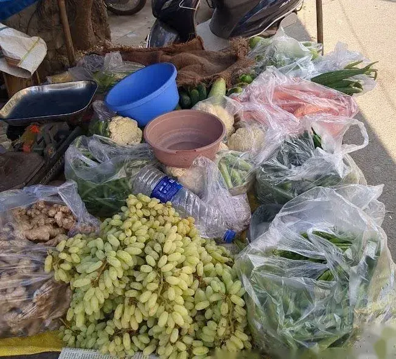
Secondary research
Research papers, news reports, occupational-safety guidance and documentaries, reviewed to frame the problem before fieldwork. A KWL chart turned the gaps into research questions.
A study of street vendors across seven Indian cities found most work 10 hours or more a day, and in several cities over half travel 10 km or more to reach where they sell.1 The vendors we met pushed 5–10 km and worked 10–12 hours.
Pushing a hand cart causes caught fingers, bumped feet, slips and falls, and strain to the back, shoulders and arms.2 A systematic review found strong evidence linking pushing and pulling to shoulder symptoms.3
Most vendors work on open roadsides. In a 2024 survey of 721 Delhi street vendors, 49% lost income in heatwaves.4 Heat spoils produce; rain keeps customers away.
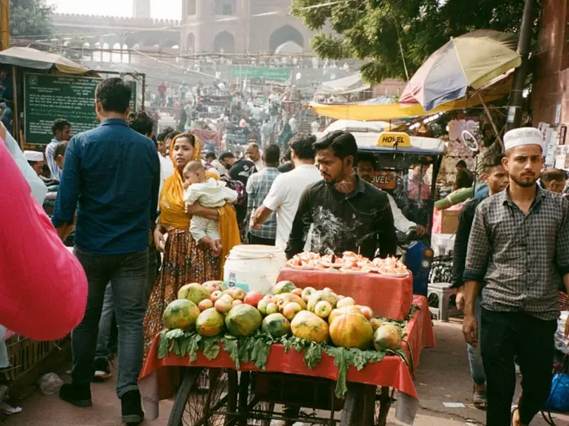
Contextual inquiry
Contextual inquiry with six vendors in Tingre Nagar and Wadgaon Sheri, Pune, on 11 March 2026, then affinity mapping.
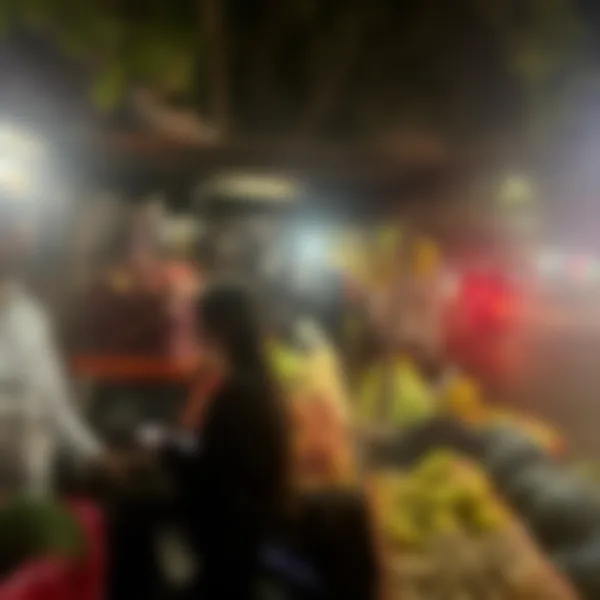
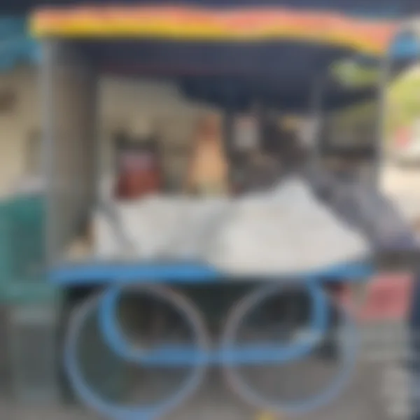
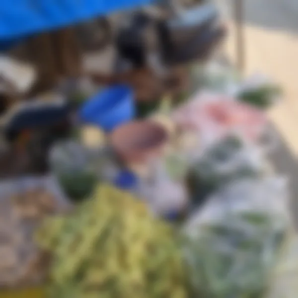
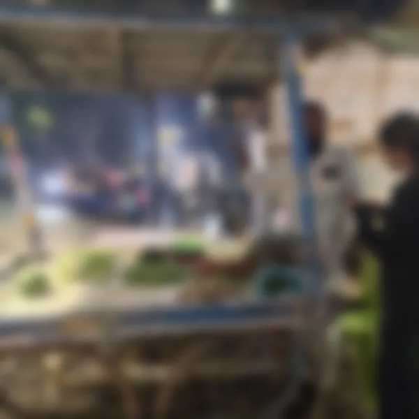
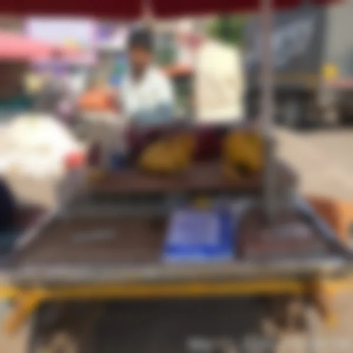
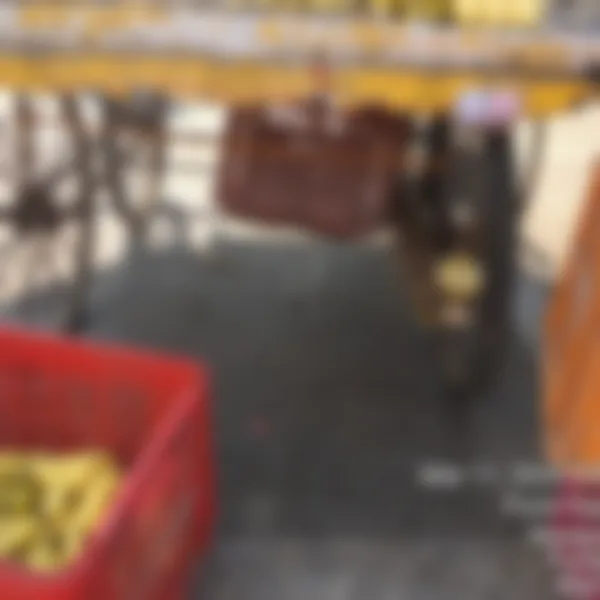
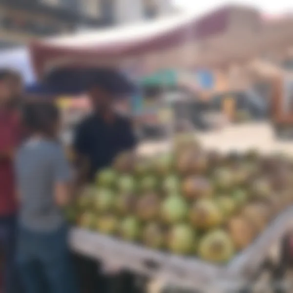
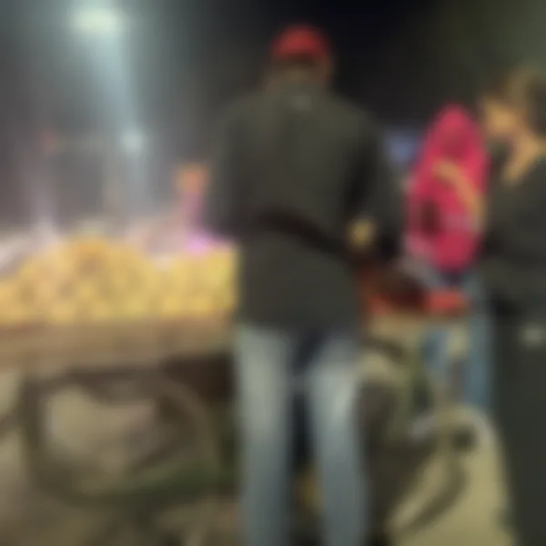
Field visits in Pune. Faces are blurred to protect the vendors.
Body Weather Storage
Personas
Built from our six vendor interviews and from watching customers buy at the carts.
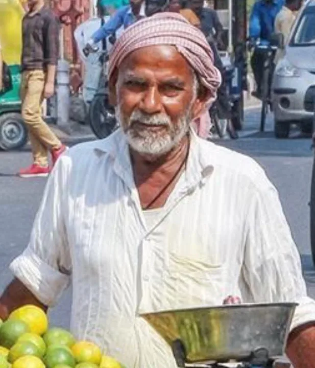
Primary user, vendor
“By the end of the day my body hurts.”
Ramesh buys fruit early every morning at the wholesale market and sells it in residential areas from a pushcart. He pushes it several kilometres a day to find streets with more customers.
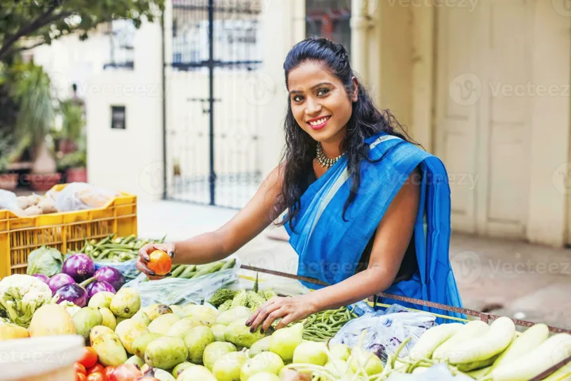
Secondary user, customer
“Sometimes fruits at the bottom look damaged.”
Anita buys fruit and vegetables from vendors who come to her housing society. She prefers them to supermarkets because they are close, affordable and quick, and buys small amounts every day or two.
Scenario: from the wholesale market to residential streets, several kilometres a day. He expects to steer easily and keep his fruit fresh.
I hope I sell most of this today.
Carrying heavy produce from the market
Crates that go straight from market to cart
The cart is getting very heavy.
Produce piled without any order
Organised storage compartments
The road ahead looks uneven.
Long distances, uneven roads, hard to steer
Better wheels and steering
Customers should be able to see the fruits clearly.
Heat exposure and spoilage
Shade or cover for the produce
I am very tired after the whole day.
Body pain from pushing all day
Ergonomic design to reduce strain
Pain point Opportunity Red stops are the hardest parts of his day.
We used a fishbone diagram to trace the strain back to its causes. The problem sits at the head, on the right. The six ribs are cause categories adapted for a physical product: people, materials, equipment, process and environment. Each bone is a specific cause from our six interviews.
The diagram as a list
ProblemVendors strain their bodies steering and stopping a loaded cart, 5–10 km a day
We designed for the cart itself, the causes a vendor can change cheaply. Roads, distance and hours are out of scope.
Competitive analysis
We compared three other kinds of cart (direct competitors) and three places customers buy instead (indirect). Images are reference photos from our desk research.
Every alternative fixes one problem by adding cost or losing capacity. None upgrades the cart vendors already own.
Direct competitors: other carts
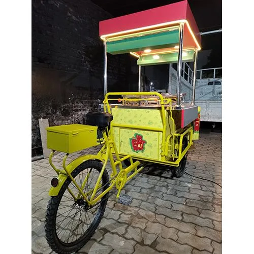
Cycle cart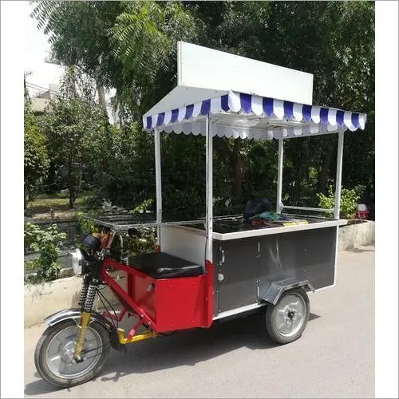
Motorised cart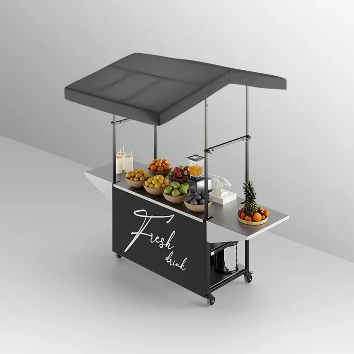
Foldable cartIndirect competitors: where customers buy instead
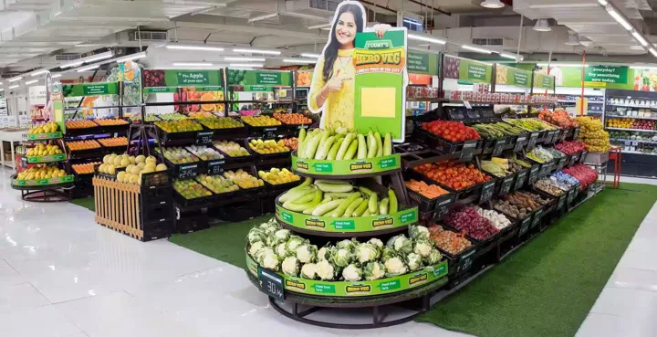
Supermarket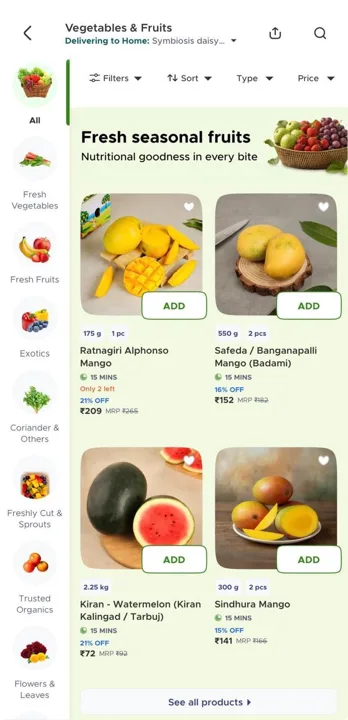
Quick commerceScroll the table sideways to see every competitor.
| Competitor | Cycle cart | Motorised cart | Foldable cart | Kirana store | Supermarket | Quick commerce |
|---|---|---|---|---|---|---|
| Type | Direct | Direct | Direct | Indirect | Indirect | Indirect |
| What it is | A vendor cart built on a bicycle | A cart with a motor and a roof | A light cart that folds away | A neighbourhood grocery shop | Large stores such as Reliance Smart and DMart | Apps such as Blinkit and Zepto |
| Mobility and wheels | Easier long distances with the bicycle | Motor allows longer travel with little effort | Light and easy to manoeuvre | Fixed; customers travel to it | Fixed, large and not hyperlocal | Delivered to the customer’s door |
| Storage system | Side baskets and display shelves | Large compartments | Limited capacity | Organised shelves and racks | Large, organised, refrigerated | Optimised warehouses |
| Weather protection | Canopy for heat | Metal roof or shade | Usually minimal | Fully indoors | Indoors, climate-controlled | Protected storage and delivery |
| Ergonomics | Less pushing, but hard to balance in narrow streets | Little strain, but expensive and less accessible | Lighter frame, not for large loads | No pushing, but long hours standing | Minimal strain | No strain for customers; it moves to riders |
| Opportunity | Keep steering easy in narrow lanes | Get similar relief at a fraction of the cost | Keep a vendor’s full load | Keep the doorstep convenience | Match the organised display | Keep the personal, local relationship |
Fruit and vegetable vendors like Ramesh, who push heavy carts 5–10 km a day, need an easier and safer way to move, steer and stop their cart, because poor steering, no brakes and heavy loads on uneven roads put constant strain on their bodies.
Based on our 6 vendor interviews and secondary research.
design an updated version of the traditional Indian fruit and vegetable cart that lets vendors travel longer distances with less physical strain, using materials that are affordable, durable and easily available locally?
The redesigned thela will let vendors steer, brake and protect their produce with cheap local parts. This will help them cover more distance with less strain. We will measure it with vendors on a working day: effort to push and turn, stopping on slopes, and total build cost.
All of it on a frugal budget, with parts sold locally.
Ideation
Nadiya sketched ideas against each of the six objectives. The first was the biggest: how might we make the cart easier to steer?
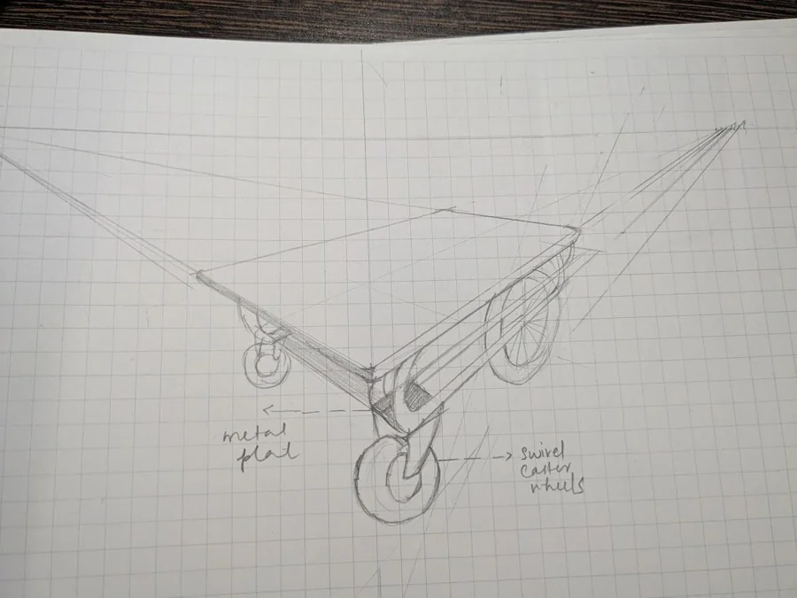
For: tight turning and less effort round corners.
Against: can be less stable on uneven roads, and front and rear wheels must sit level.
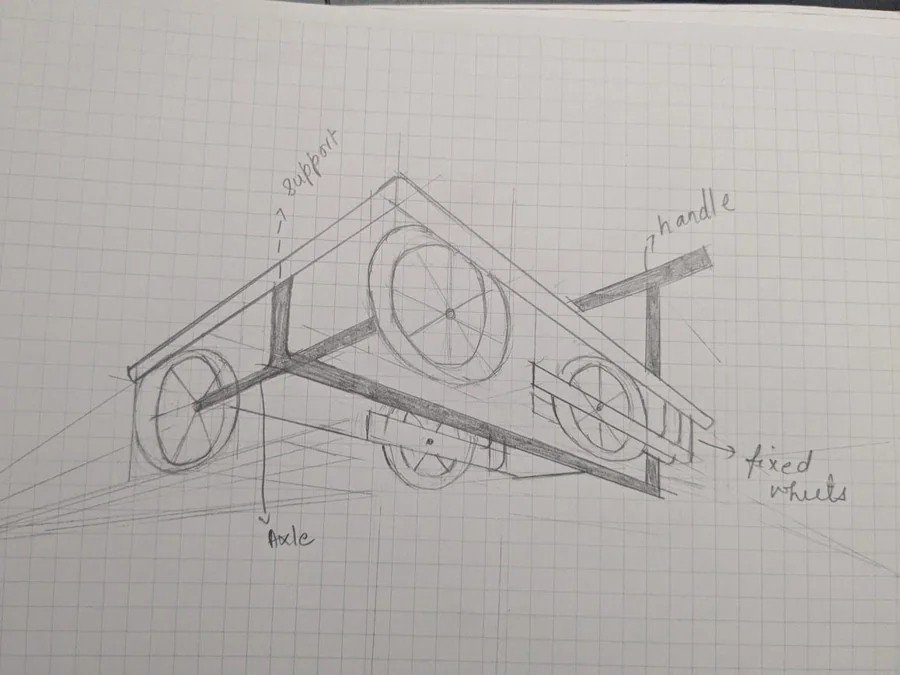
For: the handle steers the front wheels directly.
Against: not as sharp as casters, and weight shifts sideways when turning.
Casters won: they turn far tighter in narrow streets and are cheap off the shelf. A recycled cycle brake on the rear wheels handles slopes.
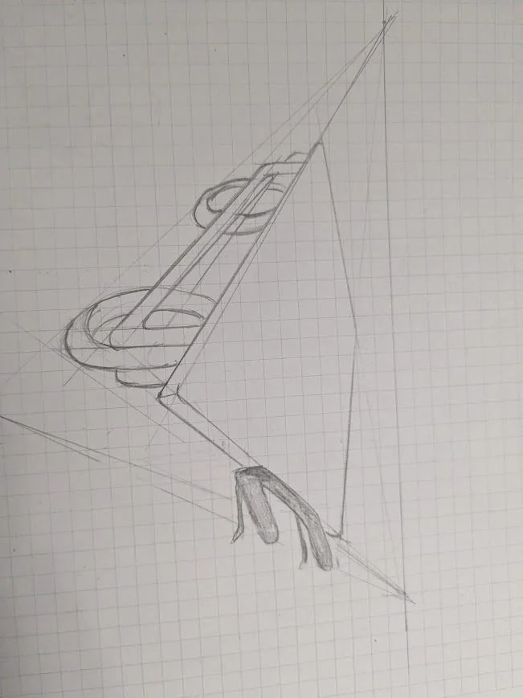
A brake cable from the rear wheels to a lever on a cycle handlebar.
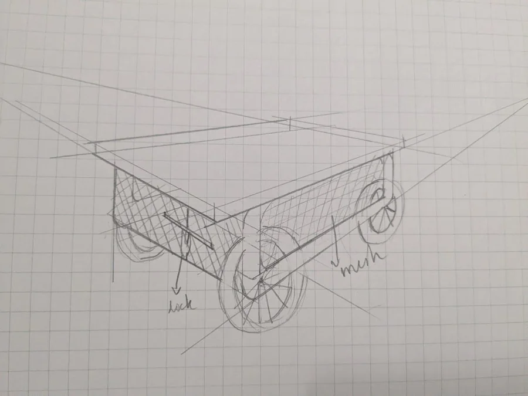
Crates on top, and the space underneath closed off with mesh and a lock.
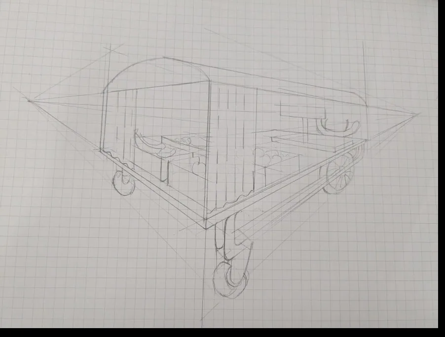
The isometric sketch the 3D model was based on.
A 3D concept, modelled in SketchUp and rendered in D5 Render. Every addition answers a research gap.
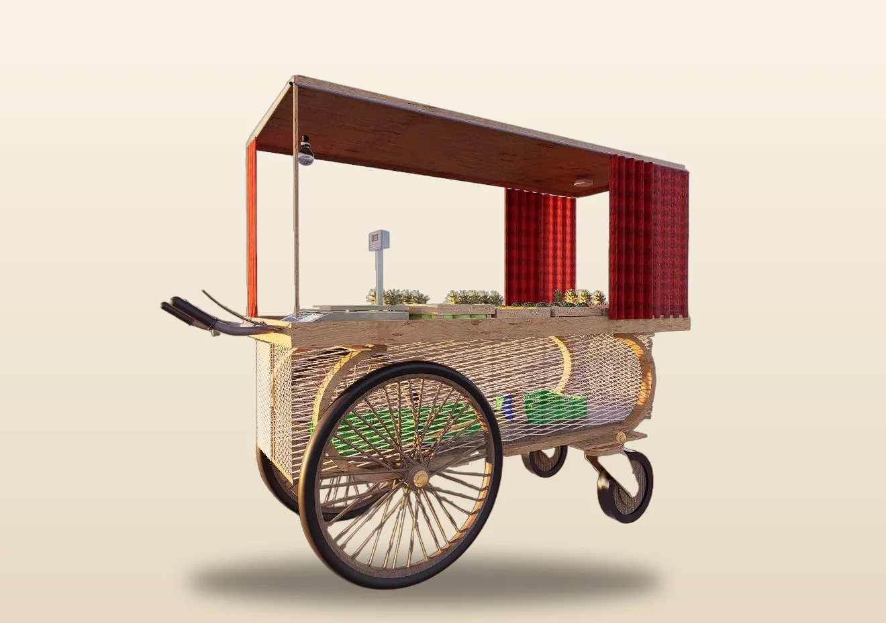
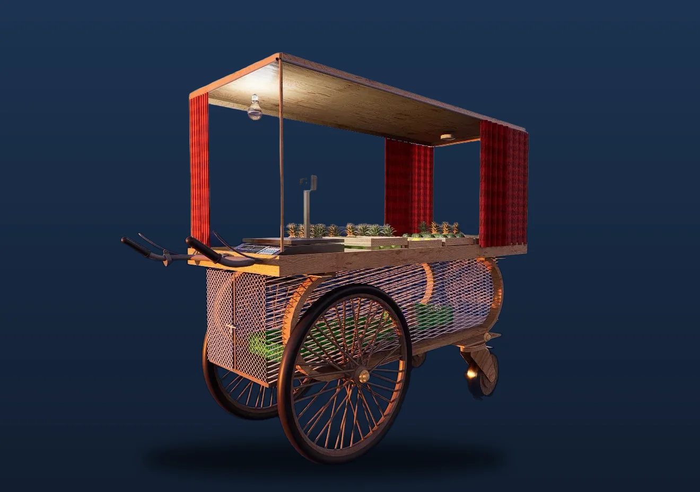
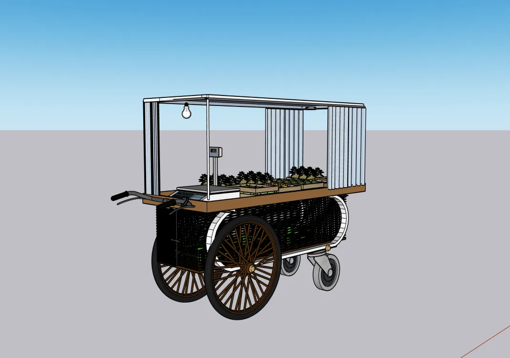
Estimated total₹5,000–6,000
The parts listed add up to ₹5,000–5,300. The canopy top, the crates, the waste bin and the QR stand aren’t priced in this list yet, so the ₹5,000–6,000 estimate is a starting point to check against real quotes. Every part is sold locally and bolts on or off.
We checked the 3D concept against every research theme and persona need. Two needs weren’t answered, and four engineering questions need a real prototype.
1UPI QR stand
2Lidded waste bin
Why: Anita prefers to pay online. A fixed stand at eye level lets customers pay without the vendor handing over a phone, and keeps the code dry under the canopy.
Not priced yet
Why: “Waste” was one of our 8 themes. Spoiled produce sits at the bottom of the cart or in plastic bags, and Ramesh needs a place for it. Anita avoids produce that sits near waste.
Not priced yet
The two big spoked wheels stay at the rear and carry most of the load. Two swivel casters replace the front pair, so the cart turns from the front.
A loaded cart can weigh up to 300 kg. If about half rests on the front, each caster carries around 75 kg. With a safety margin for potholes and kerbs, each needs a rating of at least 150 kg. We have to check that before buying.
A cycle brake is made for a rider and bike of roughly 100 kg. On a full cart on a slope it may not be enough. If it fades in testing, a drum or band brake on the rear axle is the fallback.
The canopy, curtains, pipe frame and mesh add weight to a cart that is already too heavy. We’ll weigh the prototype against a standard thela; the casters and brake have to save more effort than the additions cost.
The six design objectives, plus a seventh our review of the render added from the “Waste” theme. Each has the part of the cart that answers it and how we’d test it with a vendor. All parts are off the shelf, for an estimated ₹5,000–6,000 before real quotes.
The fishbone diagram traced most of the strain back to steering and stopping, so those became the first two fixes, ahead of shade and storage.
Pricing every part on its own ruled out anything a local mechanic couldn’t fit or fix. It’s a big reason casters beat a steering linkage.
Nadiya and I did every interview together, then split the work: her sketches, my 3D model. It worked because we were both building from the same notes.
This is still a concept. Frugal design only proves itself against real cost and real vendors.
First, show the sketches and render to the six vendors we interviewed. Then build a working prototype and use it for a real vending day, not a lab walkthrough.
Get real quotes from a local welder and compare with a standard thela.
Note whether the shade and evening light keep buyers at the stall longer, since that is what pays for the upgrade.
Academic project, Symbiosis Institute of Design.
Ask me about the research and build planPrimary research was our own: six vendor interviews in Tingre Nagar and Wadgaon Sheri, Pune, on 11 March 2026. These are the published sources behind the facts on this page.